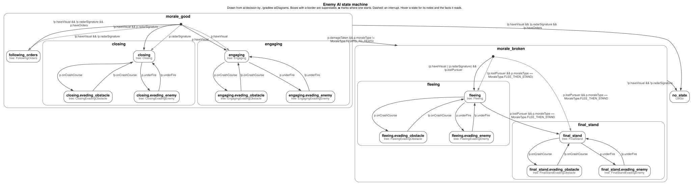

Every enemy pilot decides with a hierarchical state machine (HSM) and acts with behavior trees. These are the latest diagrams of both, drawn from the game's code and tree files, not by hand.
- Decision layer: 16 states and 29 arrows, read from
ai/decisionby./gradlew aiDiagrams. Shown as the Graphviz diagram the task draws, and as the JSON model it's drawn from. - Acting layer: the Groot2 tree files in
assets/ai/trees, redrawn here as Groot2-style trees, since Groot2 itself only runs as a desktop app.
Decision layer: the state machine
Each box is a state. A box with a border around other states is a superstate: morale_good and morale_broken only hold rules, and a ● marks where each one starts, with the conditions for each starting state. Each arrow is a switch, labelled with every condition on the way to it (all must hold). The second line in a state's box is the tree it flies. Hover a state for its notes and the facts its rules read.

./gradlew aiDiagrams draws it, shrunk to fit. Click it to open it full size, with notes on hover.Every state, as text
The same machine as an outline: each state sits inside its superstate, with where it starts (●) and the switches out of it (→), each with its conditions (all must hold).
- morale_good superstate
Where an enemy follows orders, closes and engages. Damage moves the two fleeing morale types to [MoraleBroken], for good.
- ● starts in engaging when
p.haveVisual - ● starts in closing when
p.radarSignature - ● starts in following_orders when
!p.haveVisual && !p.radarSignature - → no_state when
!p.haveVisual && !p.radarSignature && !p.haveOrders - → morale_broken when
p.damageTaken && p.moraleType != MoraleType.FIGHTS_TO_DEATH - → closing when
!p.haveVisual && p.radarSignature - → engaging when
p.haveVisual - → following_orders when
!p.haveVisual && !p.radarSignature && p.haveOrders
- following_orders tree FollowingOrders
No contact, but an order: fly its heading (the stand-in conductor re-aims it at the player).
- closing tree Closing
The target on radar but not in sight: head for where it's going to be.
- → closing.evading_obstacle when
p.onCrashCourse - → closing.evading_enemy when
p.underFire
- closing.evading_obstacle tree ClosingEvadingObstacle → EvadingObstacle
- → closing when
!p.onCrashCourse
- → closing when
- closing.evading_enemy tree ClosingEvadingEnemy → EvadingEnemy
- → closing when
!p.underFire
- → closing when
- → closing.evading_obstacle when
- engaging tree Engaging
The target in sight: the Engaging tree (the Enemy AI doc's draft). Turn to face the target and burn; once close, engine kills, small pivots and pot shots. Each time in, its aim error starts fresh; leaving ends any burst. Being in the target's sights doesn't send it evading; only being under fire does.
- → engaging.evading_obstacle when
p.onCrashCourse - → engaging.evading_enemy when
p.underFire
- engaging.evading_obstacle tree EngagingEvadingObstacle → EvadingObstacle
- → engaging when
!p.onCrashCourse
- → engaging when
- engaging.evading_enemy tree EngagingEvadingEnemy → EvadingEnemy
- → engaging when
!p.underFire
- → engaging when
- → engaging.evading_obstacle when
- ● starts in engaging when
- morale_broken superstate
Morale broken: it runs, and never recovers.
- ● starts in final_stand when
p.lostPursuer && p.moraleType == MoraleType.FLEE_THEN_STAND - ● starts in fleeing when
!(p.lostPursuer && p.moraleType == MoraleType.FLEE_THEN_STAND) - → no_state when
!p.haveVisual && !p.radarSignature - → fleeing when
(p.haveVisual || p.radarSignature) && !p.lostPursuer
- fleeing tree Fleeing
Run from the target, engines burning; a flee-then-stand enemy that has lost its pursuer turns back.
- → fleeing.evading_obstacle when
p.onCrashCourse - → fleeing.evading_enemy when
p.underFire - → final_stand when
p.lostPursuer && p.moraleType == MoraleType.FLEE_THEN_STAND
- fleeing.evading_obstacle tree FleeingEvadingObstacle → EvadingObstacle
- → fleeing when
!p.onCrashCourse
- → fleeing when
- fleeing.evading_enemy tree FleeingEvadingEnemy → EvadingEnemy
- → fleeing when
!p.underFire
- → fleeing when
- → fleeing.evading_obstacle when
- final_stand tree FinalStand
Having shaken off its pursuer, it turns back to fight to the end: the FinalStand tree, a Starbuck 180 on a dead engine and then Engaging.
- → final_stand.evading_obstacle when
p.onCrashCourse - → final_stand.evading_enemy when
p.underFire
- final_stand.evading_obstacle tree FinalStandEvadingObstacle → EvadingObstacle
- → final_stand when
!p.onCrashCourse
- → final_stand when
- final_stand.evading_enemy tree FinalStandEvadingEnemy → EvadingEnemy
- → final_stand when
!p.underFire
- → final_stand when
- → final_stand.evading_obstacle when
- ● starts in final_stand when
- no_state
LetGoOut of the machine (the JSON's "to": null): no contact and nothing to do. It lets go of its keys, and World despawns it once it's off screen.
The state machine as JSON
Two JSON files describe the decision layer:
hsm.json, generated from the code with the diagram above: every state (its parent, the tree it flies, the facts it reads, its notes) and every arrow with its conditions.INITIALarrows are a superstate's starting choices;TRANSITIONarrows are switches.enemy-pilot-spec.json, the hand-written spec from the Enemy AI doc ("The HSM as JSON"). The build's tests check the code against it, so the two can't drift apart.
hsm.json, generated from the code · download
{
"states": [
{"id": "MoraleGood", "name": "morale_good", "parent": null, "behavior": null, "urgent": false, "interrupt": false, "ignoresPlayerCollisions": false, "facts": ["p.damageTaken", "p.haveOrders", "p.haveVisual", "p.moraleType", "p.radarSignature"], "doc": "Where an enemy follows orders, closes and engages. Damage moves the two fleeing morale types to [MoraleBroken], for good."},
{"id": "FollowingOrders", "name": "following_orders", "parent": "MoraleGood", "behavior": "TreeBehavior(\"FollowingOrders\")", "urgent": false, "interrupt": false, "ignoresPlayerCollisions": false, "facts": [], "doc": "No contact, but an order: fly its heading (the stand-in conductor re-aims it at the player)."},
{"id": "Closing", "name": "closing", "parent": "MoraleGood", "behavior": "TreeBehavior(\"Closing\")", "urgent": false, "interrupt": false, "ignoresPlayerCollisions": false, "facts": ["p.onCrashCourse", "p.underFire"], "doc": "The target on radar but not in sight: head for where it's going to be."},
{"id": "ClosingEvadingObstacle", "name": "closing.evading_obstacle", "parent": "Closing", "behavior": "TreeBehavior(\"ClosingEvadingObstacle\")", "urgent": false, "interrupt": false, "ignoresPlayerCollisions": false, "facts": ["p.onCrashCourse"], "doc": null},
{"id": "ClosingEvadingEnemy", "name": "closing.evading_enemy", "parent": "Closing", "behavior": "TreeBehavior(\"ClosingEvadingEnemy\")", "urgent": false, "interrupt": false, "ignoresPlayerCollisions": false, "facts": ["p.underFire"], "doc": null},
{"id": "Engaging", "name": "engaging", "parent": "MoraleGood", "behavior": "TreeBehavior(\"Engaging\")", "urgent": false, "interrupt": false, "ignoresPlayerCollisions": false, "facts": ["p.onCrashCourse", "p.underFire"], "doc": "The target in sight: the Engaging tree (the Enemy AI doc's draft). Turn to face the target and burn; once close, engine kills, small pivots and pot shots. Each time in, its aim error starts fresh; leaving ends any burst. Being in the target's sights doesn't send it evading; only being under fire does."},
{"id": "EngagingEvadingObstacle", "name": "engaging.evading_obstacle", "parent": "Engaging", "behavior": "TreeBehavior(\"EngagingEvadingObstacle\")", "urgent": false, "interrupt": false, "ignoresPlayerCollisions": false, "facts": ["p.onCrashCourse"], "doc": null},
{"id": "EngagingEvadingEnemy", "name": "engaging.evading_enemy", "parent": "Engaging", "behavior": "TreeBehavior(\"EngagingEvadingEnemy\")", "urgent": false, "interrupt": false, "ignoresPlayerCollisions": false, "facts": ["p.underFire"], "doc": null},
{"id": "MoraleBroken", "name": "morale_broken", "parent": null, "behavior": null, "urgent": false, "interrupt": false, "ignoresPlayerCollisions": false, "facts": ["p.haveVisual", "p.lostPursuer", "p.moraleType", "p.radarSignature"], "doc": "Morale broken: it runs, and never recovers."},
{"id": "Fleeing", "name": "fleeing", "parent": "MoraleBroken", "behavior": "TreeBehavior(\"Fleeing\")", "urgent": false, "interrupt": false, "ignoresPlayerCollisions": false, "facts": ["p.lostPursuer", "p.moraleType", "p.onCrashCourse", "p.underFire"], "doc": "Run from the target, engines burning; a flee-then-stand enemy that has lost its pursuer turns back."},
{"id": "FleeingEvadingObstacle", "name": "fleeing.evading_obstacle", "parent": "Fleeing", "behavior": "TreeBehavior(\"FleeingEvadingObstacle\")", "urgent": false, "interrupt": false, "ignoresPlayerCollisions": false, "facts": ["p.onCrashCourse"], "doc": null},
{"id": "FleeingEvadingEnemy", "name": "fleeing.evading_enemy", "parent": "Fleeing", "behavior": "TreeBehavior(\"FleeingEvadingEnemy\")", "urgent": false, "interrupt": false, "ignoresPlayerCollisions": false, "facts": ["p.underFire"], "doc": null},
{"id": "FinalStand", "name": "final_stand", "parent": "MoraleBroken", "behavior": "TreeBehavior(\"FinalStand\")", "urgent": false, "interrupt": false, "ignoresPlayerCollisions": false, "facts": ["p.onCrashCourse", "p.underFire"], "doc": "Having shaken off its pursuer, it turns back to fight to the end: the FinalStand tree, a Starbuck 180 on a dead engine and then Engaging."},
{"id": "FinalStandEvadingObstacle", "name": "final_stand.evading_obstacle", "parent": "FinalStand", "behavior": "TreeBehavior(\"FinalStandEvadingObstacle\")", "urgent": false, "interrupt": false, "ignoresPlayerCollisions": false, "facts": ["p.onCrashCourse"], "doc": null},
{"id": "FinalStandEvadingEnemy", "name": "final_stand.evading_enemy", "parent": "FinalStand", "behavior": "TreeBehavior(\"FinalStandEvadingEnemy\")", "urgent": false, "interrupt": false, "ignoresPlayerCollisions": false, "facts": ["p.underFire"], "doc": null},
{"id": "NoState", "name": "no_state", "parent": null, "behavior": "LetGo", "urgent": false, "interrupt": false, "ignoresPlayerCollisions": false, "facts": [], "doc": "Out of the machine (the JSON's \"to\": null): no contact and nothing to do. It lets go of its keys, and World despawns it once it's off screen."}
],
"arrows": [
{"from": "MoraleGood", "to": "NoState", "kind": "TRANSITION", "conditions": ["!p.haveVisual && !p.radarSignature && !p.haveOrders"], "computed": null},
{"from": "MoraleGood", "to": "MoraleBroken", "kind": "TRANSITION", "conditions": ["p.damageTaken && p.moraleType != MoraleType.FIGHTS_TO_DEATH"], "computed": null},
{"from": "MoraleGood", "to": "Closing", "kind": "TRANSITION", "conditions": ["!p.haveVisual && p.radarSignature"], "computed": null},
{"from": "MoraleGood", "to": "Engaging", "kind": "TRANSITION", "conditions": ["p.haveVisual"], "computed": null},
{"from": "MoraleGood", "to": "FollowingOrders", "kind": "TRANSITION", "conditions": ["!p.haveVisual && !p.radarSignature && p.haveOrders"], "computed": null},
{"from": "MoraleGood", "to": "Engaging", "kind": "INITIAL", "conditions": ["p.haveVisual"], "computed": null},
{"from": "MoraleGood", "to": "Closing", "kind": "INITIAL", "conditions": ["p.radarSignature"], "computed": null},
{"from": "MoraleGood", "to": "FollowingOrders", "kind": "INITIAL", "conditions": ["!p.haveVisual && !p.radarSignature"], "computed": null},
{"from": "Closing", "to": "ClosingEvadingObstacle", "kind": "TRANSITION", "conditions": ["p.onCrashCourse"], "computed": null},
{"from": "Closing", "to": "ClosingEvadingEnemy", "kind": "TRANSITION", "conditions": ["p.underFire"], "computed": null},
{"from": "ClosingEvadingObstacle", "to": "Closing", "kind": "TRANSITION", "conditions": ["!p.onCrashCourse"], "computed": null},
{"from": "ClosingEvadingEnemy", "to": "Closing", "kind": "TRANSITION", "conditions": ["!p.underFire"], "computed": null},
{"from": "Engaging", "to": "EngagingEvadingObstacle", "kind": "TRANSITION", "conditions": ["p.onCrashCourse"], "computed": null},
{"from": "Engaging", "to": "EngagingEvadingEnemy", "kind": "TRANSITION", "conditions": ["p.underFire"], "computed": null},
{"from": "EngagingEvadingObstacle", "to": "Engaging", "kind": "TRANSITION", "conditions": ["!p.onCrashCourse"], "computed": null},
{"from": "EngagingEvadingEnemy", "to": "Engaging", "kind": "TRANSITION", "conditions": ["!p.underFire"], "computed": null},
{"from": "MoraleBroken", "to": "NoState", "kind": "TRANSITION", "conditions": ["!p.haveVisual && !p.radarSignature"], "computed": null},
{"from": "MoraleBroken", "to": "Fleeing", "kind": "TRANSITION", "conditions": ["(p.haveVisual || p.radarSignature) && !p.lostPursuer"], "computed": null},
{"from": "MoraleBroken", "to": "FinalStand", "kind": "INITIAL", "conditions": ["p.lostPursuer && p.moraleType == MoraleType.FLEE_THEN_STAND"], "computed": null},
{"from": "MoraleBroken", "to": "Fleeing", "kind": "INITIAL", "conditions": ["!(p.lostPursuer && p.moraleType == MoraleType.FLEE_THEN_STAND)"], "computed": null},
{"from": "Fleeing", "to": "FleeingEvadingObstacle", "kind": "TRANSITION", "conditions": ["p.onCrashCourse"], "computed": null},
{"from": "Fleeing", "to": "FleeingEvadingEnemy", "kind": "TRANSITION", "conditions": ["p.underFire"], "computed": null},
{"from": "Fleeing", "to": "FinalStand", "kind": "TRANSITION", "conditions": ["p.lostPursuer && p.moraleType == MoraleType.FLEE_THEN_STAND"], "computed": null},
{"from": "FleeingEvadingObstacle", "to": "Fleeing", "kind": "TRANSITION", "conditions": ["!p.onCrashCourse"], "computed": null},
{"from": "FleeingEvadingEnemy", "to": "Fleeing", "kind": "TRANSITION", "conditions": ["!p.underFire"], "computed": null},
{"from": "FinalStand", "to": "FinalStandEvadingObstacle", "kind": "TRANSITION", "conditions": ["p.onCrashCourse"], "computed": null},
{"from": "FinalStand", "to": "FinalStandEvadingEnemy", "kind": "TRANSITION", "conditions": ["p.underFire"], "computed": null},
{"from": "FinalStandEvadingObstacle", "to": "FinalStand", "kind": "TRANSITION", "conditions": ["!p.onCrashCourse"], "computed": null},
{"from": "FinalStandEvadingEnemy", "to": "FinalStand", "kind": "TRANSITION", "conditions": ["!p.underFire"], "computed": null}
]
}enemy-pilot-spec.json, the spec the tests check · download
{
"machine": "enemy_pilot",
"status": "draft",
"source": "The Enemy AI doc, \"The HSM as JSON\" (rev 1736): the spec HsmSpecTest checks the Kotlin machine against. Keep it in step with the doc.",
"transition_rules": {
"interrupting_parents": ["morale_good", "morale_broken"],
"interrupt_depth": "direct children only",
"order": ["interrupting parent's rules", "innermost state's rules"],
"within_a_state": "first true rule in listed order",
"to_active_state": "ignored",
"initial_state": "morale_good"
},
"percepts": {
"have_visual": { "type": "bool", "note": "Today's nose cone; stays on for a tunable few seconds after losing sight" },
"radar_signature": { "type": "bool", "note": "Listed as 'radar indicator' among the percepts. Stays on for LOST_TARGET_TICKS (2 s) after contact drops; perception keeps the countdown" },
"have_orders": { "type": "bool", "note": "True while the enemy holds an order" },
"order": { "type": "record", "fields": { "kind": "heading", "bearing": "radians" }, "set_by": "Level Conductor; a spawn stand-in for the demo, which re-aims the bearing at the player every few seconds", "note": "Only kind 'heading' for now. Later kinds, such as engaging another target, add fields without changing the trees" },
"on_crash_course": { "type": "bool" },
"under_fire": { "type": "bool", "level": "under_fire_level = clamp(under_fire_level - under_fire_decay_per_second / 120 + under_fire_gain * near_miss, 0, 1)", "on_when": "under_fire_level >= under_fire_enter", "off_when": "under_fire_level <= under_fire_exit", "note": "Each near miss the pilot notices adds under_fire_gain; the level decays at a constant rate. Two thresholds, so an enemy keeps evading until it has gone a while without a close shot. Better pilots notice more of the shots" },
"damage_taken": { "type": "bool", "latched": true, "note": "Any hull damage, including collisions with rocks and ships. Once on, stays on: morale only breaks one way" },
"outnumbered": { "type": "int", "note": "0 or 1" },
"near_miss": { "type": "int", "note": "1 on a tick with a noticed close round, else 0: a near miss, a round that crossed the hit box but failed the hit roll, or a hit" },
"outgunned": { "type": "number", "formula": "outgunned * outgunned_decay + (1 - outgunned_decay) * outnumbered * near_miss", "note": "Climbs from 0 while outnumbered and taking near misses, decays toward 0 otherwise, never leaves 0..1. Feeds morale; not used by any transition yet" },
"lost_pursuer": { "type": "bool", "latched": true, "note": "Turns on once a fleeing enemy has left the player's camera view as currently framed (zoom included), and stays on so a Final Stand enemy isn't sent back to Fleeing" },
"morale_type": { "type": "enum", "values": ["fights_to_death", "flee_for_good", "flee_then_stand"], "fixed_at_spawn": true, "note": "How much the pilot feels it can take on; rules read it like any other percept" }
},
"params": {
"outgunned_decay": null,
"under_fire_gain": 0.4,
"under_fire_decay_per_second": 0.5,
"under_fire_enter": 1.0,
"under_fire_exit": 0.0
},
"params_note": "under_fire_gain and under_fire_decay_per_second are starting values for every NPC through step 4; both stay tunable, later per NPC type and difficulty",
"states": [
{
"id": "morale_good",
"transitions": [
{ "to": null, "when": "!have_visual && !radar_signature && !have_orders" },
{ "to": "morale_broken", "when": "damage_taken && morale_type != 'fights_to_death'" },
{ "to": "closing", "when": "!have_visual && radar_signature" },
{ "to": "engaging", "when": "have_visual" },
{ "to": "following_orders", "when": "!have_visual && !radar_signature && have_orders" }
],
"states": [
{
"id": "following_orders"
},
{
"id": "closing",
"transitions": [
{ "to": "closing.evading_obstacle", "when": "on_crash_course" },
{ "to": "closing.evading_enemy", "when": "under_fire" }
],
"states": [
{
"id": "closing.evading_obstacle",
"transitions": [
{ "to": "closing", "when": "!on_crash_course" }
]
},
{
"id": "closing.evading_enemy",
"note": "Enemies pick targets as the player does, so one can be chasing and under fire at once",
"transitions": [
{ "to": "closing", "when": "!under_fire", "note": "Smarter NPCs might try attacking instead" }
]
}
]
},
{
"id": "engaging",
"behavior_tree": "Engaging",
"transitions": [
{ "to": "engaging.evading_obstacle", "when": "on_crash_course" },
{ "to": "engaging.evading_enemy", "when": "under_fire" }
],
"states": [
{
"id": "engaging.evading_obstacle",
"transitions": [
{ "to": "engaging", "when": "!on_crash_course" }
]
},
{
"id": "engaging.evading_enemy",
"note": "Enemies pick targets as the player does, so one can be chasing and under fire at once",
"transitions": [
{ "to": "engaging", "when": "!under_fire", "note": "Smarter NPCs might try attacking instead" }
]
}
]
}
]
},
{
"id": "morale_broken",
"transitions": [
{ "to": null, "when": "!have_visual && !radar_signature" },
{ "to": "fleeing", "when": "(have_visual || radar_signature) && !lost_pursuer" }
],
"states": [
{
"id": "fleeing",
"behavior_tree": "Fleeing",
"transitions": [
{ "to": "fleeing.evading_obstacle", "when": "on_crash_course" },
{ "to": "fleeing.evading_enemy", "when": "under_fire" },
{ "to": "final_stand", "when": "lost_pursuer && morale_type == 'flee_then_stand'" }
],
"states": [
{
"id": "fleeing.evading_obstacle",
"transitions": [
{ "to": "fleeing", "when": "!on_crash_course" }
]
},
{
"id": "fleeing.evading_enemy",
"note": "Enemies pick targets as the player does, so one can be chasing and under fire at once",
"transitions": [
{ "to": "fleeing", "when": "!under_fire" }
]
}
]
},
{
"id": "final_stand",
"transitions": [
{ "to": "final_stand.evading_obstacle", "when": "on_crash_course" },
{ "to": "final_stand.evading_enemy", "when": "under_fire" }
],
"states": [
{
"id": "final_stand.evading_obstacle",
"transitions": [
{ "to": "final_stand", "when": "!on_crash_course" }
]
},
{
"id": "final_stand.evading_enemy",
"note": "Enemies pick targets as the player does, so one can be chasing and under fire at once",
"transitions": [
{ "to": "final_stand", "when": "!under_fire" }
]
}
]
}
]
}
]
}Acting layer: the behavior trees
Every state that flies the ship does it with a tree. Trees tick from the top: a Sequence (→) runs its children left to right until one fails; a Fallback (?) tries them left to right until one succeeds. Reactive versions re-check earlier children every tick, so a lost target stops the tree at once. Each node's children are indented under it, in the order they run. Ports show their values; {name} is a blackboard key shared between nodes. A SubTree node links to the tree it calls.
Which tree each state flies
| State | Tree |
|---|---|
following_orders | FollowingOrders |
closing | Closing |
closing.evading_obstacle | ClosingEvadingObstacle, which calls EvadingObstacle |
closing.evading_enemy | ClosingEvadingEnemy, which calls EvadingEnemy |
engaging | Engaging |
engaging.evading_obstacle | EngagingEvadingObstacle, which calls EvadingObstacle |
engaging.evading_enemy | EngagingEvadingEnemy, which calls EvadingEnemy |
fleeing | Fleeing |
fleeing.evading_obstacle | FleeingEvadingObstacle, which calls EvadingObstacle |
fleeing.evading_enemy | FleeingEvadingEnemy, which calls EvadingEnemy |
final_stand | FinalStand |
final_stand.evading_obstacle | FinalStandEvadingObstacle, which calls EvadingObstacle |
final_stand.evading_enemy | FinalStandEvadingEnemy, which calls EvadingEnemy |
no_state | LetGo (Kotlin, no tree) |
The superstates (morale_good, morale_broken) only hold rules and fly nothing.
FollowingOrders
FollowingOrders (following_orders): no contact, but an order. Turn onto the order's heading and burn along it (the Enemy AI doc's draft, "Trees with no draft yet"). The stand-in conductor re-aims the heading at the player every few seconds, so an enemy that loses contact keeps coming.
Every tick it first lets go of everything, then presses only what this tick needs: the turn always, the engine once the nose is within AI_THRUST_CONE of the heading. With no order it lets go and fails.
- ⟳? Reactive Fallback
- ⟳→ Reactive Sequence “follow”
- Action OrderHeading
heading = {heading} - Action ReleaseAllKeys
- Action TurnToBearing
heading = {heading}bearing = {turnBearing} - Action Thrust
- Decorator ForceFailure “noOrder”
- Action ReleaseAllKeys
From assets/ai/trees/following_orders.xml · XML for Groot2
Closing
Closing (closing): the target on radar but not in sight. Head for where it will be at top speed (HeadingToTarget's lead) and burn once the nose is within AI_THRUST_CONE of it. With no target it lets go and fails.
Today's lead pursuit, rebuilt from leaves: the doc has no draft for Closing yet, so it flies as the step 4 stand-in (CloseDistance) did.
- ⟳? Reactive Fallback
- ⟳→ Reactive Sequence “close”
- Action HeadingToTarget
heading = {heading} - Action ReleaseAllKeys
- Action TurnToBearing
heading = {heading}bearing = {turnBearing} - Action Thrust
- Decorator ForceFailure “noTarget”
- Action ReleaseAllKeys
From assets/ai/trees/closing.xml · XML for Groot2
Engaging
Engaging (engaging): the target in sight (the Enemy AI doc's draft: check visual or radar, turn to 0° and burn engines, then once close, engine kills, small pivots and pot shots; team-up is tabled).
Every tick it checks it still has the target and lets go of every key, then:
- closeIn, while farther than the knife-fight range: head for where the target will be at top speed and burn once the nose is within AI_THRUST_CONE. No shooting on the way in.
- knifeFight, once inside it: AimAndFire keeps the nose on the bullet-speed lead (with this burst's aim error) and fires bursts when lined up: the pot shots. Under it, a loop of maneuvers that override the throttle or the nose: coast on a dead engine, jink a few degrees, coast again, jink again, then a short burn. A coasting enemy that drifts back out of range turns and burns in again; restarting after a big swing of the nose on a dead engine lights the reverse boost and drops its shield, the risk the dead-engine moves carry. With no target it lets go and fails.
The range, times and angles are first guesses, tuned here.
- ⟳? Reactive Fallback
- ⟳→ Reactive Sequence “engage”
- ? Fallback “contact”
- Condition HasVisual
- Condition HasRadarContact
- Condition HasTarget
- Action ReleaseAllKeys
- ⟳? Reactive Fallback
- ⟳→ Reactive Sequence “knifeFight”
- Condition InRange
range = 800 - Action AimAndFire
bearing = {aimBearing} - → Sequence “maneuvers”
- Action EngineKill
seconds = 1.0 - Action Pivot
degrees = 25seconds = 0.5 - Action EngineKill
seconds = 0.6 - Action Pivot
degrees = 25seconds = 0.5 - Action Thrust
seconds = 0.6
- ⟳→ Reactive Sequence “closeIn”
- Action HeadingToTarget
heading = {heading} - Action TurnToBearing
heading = {heading}bearing = {turnBearing} - Action Thrust
- Decorator ForceFailure “noTarget”
- Action ReleaseAllKeys
From assets/ai/trees/engaging.xml · XML for Groot2
Fleeing
Fleeing (fleeing): morale broken, run (the Enemy AI doc's draft: check visual or radar, turn 180° away, burn engines).
Every tick it takes the heading straight away from the target and lets go of every key, then:
- Breakaway: a broken fighter's boost, afterburner and booster on while it lasts.
- Reverse: if turning in-plane onto the way out would show it upside down to its pursuer, it yaws round instead, engine on (issue #34). It holds the sequence until the reversal ends.
- Thrust and TurnToBearing: the engine burns the whole time, turns included (issue #59), leaving a vapor trail to follow and keeping the turn going, which is when a shot is least likely to hit. With no target it lets go and fails.
- ⟳? Reactive Fallback
- ⟳→ Reactive Sequence “flee”
- Action HeadingAwayFromTarget
heading = {heading} - Action ReleaseAllKeys
- Action Breakaway
- Action Reverse
heading = {heading} - Action Thrust
- Action TurnToBearing
heading = {heading}bearing = {turnBearing}
- Decorator ForceFailure “noTarget”
- Action ReleaseAllKeys
From assets/ai/trees/fleeing.xml · XML for Groot2
FinalStand
FinalStand (final_stand): a flee-then-stand enemy that has shaken off its pursuer turns back to fight to the end (the Enemy AI doc, "Trees with no draft yet"): a Starbuck 180 on a dead engine to try for a zero, then regular engaging, reusing the Engaging tree as a subtree.
- run: it keeps fleeing, engine burning (the Fleeing tree), until the pursuer has caught up to gun range (ENEMY_FIRE_RANGE). A pursuer that never catches up never gets the stand. Fleeing reports SUCCESS once lined up on its way out, so a Repeat keeps it going.
- starbuck: then it kills the engine, and AimAndFire swings the nose round onto the pursuer's lead and fires bursts while it coasts on backward, for 2.5 s. No restart inside the move, so no reverse boost and no shield drop there.
- then Engaging, for as long as the stand lasts. Its first burn after the dead-engine swing is a restart, so it lights the reverse boost and drops the shield, as for any pilot. Each time the state is entered (after an evasion, say) it starts over. The 180's length is a first guess, tuned here.
- → Sequence
From assets/ai/trees/final_stand.xml · XML for Groot2
EvadingObstacle
Shared: every state's …evading_obstacle child flies this, through a one-node wrapper.
A collision coming: swerve round it, or turn and brake before a rock dead ahead. SUCCESS once the path has stayed clear for AVOID_CLEAR_TICKS.
- Action AvoidObstacle
From assets/ai/trees/evading.xml · XML for Groot2
EvadingEnemy
Shared: every state's …evading_enemy child flies this, through a one-node wrapper.
Under fire: the boost combo off the shooter's aim line, burning straight between combos.
- Action TurnAndBurn
From assets/ai/trees/evading.xml · XML for Groot2
StrafeRun
Not flown in play. It's the first tree, kept as a proof: a test checks it flies key for key like the Kotlin it replaced.
StrafeRun: commit to a pass. Turn onto the bullet-speed lead with this burst's aim error, thrust when roughly lined up, fire bursts, and run until the phase timer ends (SUCCESS hands over to breakingOff). With no target it lets go of every key and fails.
Ported key for key from the StrafeRun lambda in Behaviors.kt, which a test (StrafeRunTreeTest) uses as the reference.
- ⟳? Reactive Fallback
- ⟳→ Reactive Sequence “pass”
- Condition HasTarget
- Action AimAndFire
bearing = {aimBearing} - Action ThrustWithin
bearing = {aimBearing} - Action KeysOff
keys = stabilize,afterburner,booster - Action CountDownPhase
- Decorator ForceFailure “noTarget”
- Action ReleaseAllKeys
From assets/ai/trees/strafe_run.xml · XML for Groot2
The trees as XML
The tree files are the plaintext form of the trees: BehaviorTree.CPP v4 XML, the format Groot2 opens and saves, and what the game loads at startup. They're shown here exactly as they are in assets/ai/trees, comments included. palette.xml is generated from the game's node registry (./gradlew btPalette) and lists every node a tree can use, with its ports. Load it into Groot2's node models before opening a tree.
following_orders.xml, tree FollowingOrders · download
<?xml version="1.0" encoding="UTF-8"?>
<!--
FollowingOrders (following_orders): no contact, but an order. Turn onto
the order's heading and burn along it (the Enemy AI doc's draft, "Trees
with no draft yet"). The stand-in conductor re-aims the heading at the
player every few seconds, so an enemy that loses contact keeps coming.
Every tick it first lets go of everything, then presses only what this
tick needs: the turn always, the engine once the nose is within
AI_THRUST_CONE of the heading. With no order it lets go and fails.
-->
<root BTCPP_format="4" main_tree_to_execute="FollowingOrders">
<BehaviorTree ID="FollowingOrders">
<ReactiveFallback>
<ReactiveSequence name="follow">
<OrderHeading heading="{heading}"/>
<ReleaseAllKeys/>
<TurnToBearing heading="{heading}" bearing="{turnBearing}"/>
<Thrust/>
</ReactiveSequence>
<ForceFailure name="noOrder">
<ReleaseAllKeys/>
</ForceFailure>
</ReactiveFallback>
</BehaviorTree>
</root>closing.xml, tree Closing · download
<?xml version="1.0" encoding="UTF-8"?>
<!--
Closing (closing): the target on radar but not in sight. Head for where
it will be at top speed (HeadingToTarget's lead) and burn once the nose
is within AI_THRUST_CONE of it. With no target it lets go and fails.
Today's lead pursuit, rebuilt from leaves: the doc has no draft for
Closing yet, so it flies as the step 4 stand-in (CloseDistance) did.
-->
<root BTCPP_format="4" main_tree_to_execute="Closing">
<BehaviorTree ID="Closing">
<ReactiveFallback>
<ReactiveSequence name="close">
<HeadingToTarget heading="{heading}"/>
<ReleaseAllKeys/>
<TurnToBearing heading="{heading}" bearing="{turnBearing}"/>
<Thrust/>
</ReactiveSequence>
<ForceFailure name="noTarget">
<ReleaseAllKeys/>
</ForceFailure>
</ReactiveFallback>
</BehaviorTree>
</root>engaging.xml, tree Engaging · download
<?xml version="1.0" encoding="UTF-8"?>
<!--
Engaging (engaging): the target in sight (the Enemy AI doc's draft:
check visual or radar, turn to 0° and burn engines, then once close,
engine kills, small pivots and pot shots; team-up is tabled).
Every tick it checks it still has the target and lets go of every key,
then:
- closeIn, while farther than the knife-fight range: head for where the
target will be at top speed and burn once the nose is within
AI_THRUST_CONE. No shooting on the way in.
- knifeFight, once inside it: AimAndFire keeps the nose on the
bullet-speed lead (with this burst's aim error) and fires bursts when
lined up: the pot shots. Under it, a loop of maneuvers that override
the throttle or the nose: coast on a dead engine, jink a few degrees,
coast again, jink again, then a short burn. A coasting enemy that
drifts back out of range turns and burns in again; restarting after a
big swing of the nose on a dead engine lights the reverse boost and
drops its shield, the risk the dead-engine moves carry.
With no target it lets go and fails.
The range, times and angles are first guesses, tuned here.
-->
<root BTCPP_format="4" main_tree_to_execute="Engaging">
<BehaviorTree ID="Engaging">
<ReactiveFallback>
<ReactiveSequence name="engage">
<Fallback name="contact">
<HasVisual/>
<HasRadarContact/>
</Fallback>
<HasTarget/>
<ReleaseAllKeys/>
<ReactiveFallback>
<ReactiveSequence name="knifeFight">
<InRange range="800"/>
<AimAndFire bearing="{aimBearing}"/>
<Sequence name="maneuvers">
<EngineKill seconds="1.0"/>
<Pivot degrees="25" seconds="0.5"/>
<EngineKill seconds="0.6"/>
<Pivot degrees="25" seconds="0.5"/>
<Thrust seconds="0.6"/>
</Sequence>
</ReactiveSequence>
<ReactiveSequence name="closeIn">
<HeadingToTarget heading="{heading}"/>
<TurnToBearing heading="{heading}" bearing="{turnBearing}"/>
<Thrust/>
</ReactiveSequence>
</ReactiveFallback>
</ReactiveSequence>
<ForceFailure name="noTarget">
<ReleaseAllKeys/>
</ForceFailure>
</ReactiveFallback>
</BehaviorTree>
</root>fleeing.xml, tree Fleeing · download
<?xml version="1.0" encoding="UTF-8"?>
<!--
Fleeing (fleeing): morale broken, run (the Enemy AI doc's draft: check
visual or radar, turn 180° away, burn engines).
Every tick it takes the heading straight away from the target and lets
go of every key, then:
- Breakaway: a broken fighter's boost, afterburner and booster on while
it lasts.
- Reverse: if turning in-plane onto the way out would show it upside
down to its pursuer, it yaws round instead, engine on (issue #34). It
holds the sequence until the reversal ends.
- Thrust and TurnToBearing: the engine burns the whole time, turns
included (issue #59), leaving a vapor trail to follow and keeping the
turn going, which is when a shot is least likely to hit.
With no target it lets go and fails.
-->
<root BTCPP_format="4" main_tree_to_execute="Fleeing">
<BehaviorTree ID="Fleeing">
<ReactiveFallback>
<ReactiveSequence name="flee">
<HeadingAwayFromTarget heading="{heading}"/>
<ReleaseAllKeys/>
<Breakaway/>
<Reverse heading="{heading}"/>
<Thrust/>
<TurnToBearing heading="{heading}" bearing="{turnBearing}"/>
</ReactiveSequence>
<ForceFailure name="noTarget">
<ReleaseAllKeys/>
</ForceFailure>
</ReactiveFallback>
</BehaviorTree>
</root>final_stand.xml, tree FinalStand · download
<?xml version="1.0" encoding="UTF-8"?>
<!--
FinalStand (final_stand): a flee-then-stand enemy that has shaken off its
pursuer turns back to fight to the end (the Enemy AI doc, "Trees with no
draft yet"): a Starbuck 180 on a dead engine to try for a zero, then
regular engaging, reusing the Engaging tree as a subtree.
- run: it keeps fleeing, engine burning (the Fleeing tree), until the
pursuer has caught up to gun range (ENEMY_FIRE_RANGE). A pursuer that
never catches up never gets the stand. Fleeing reports SUCCESS once
lined up on its way out, so a Repeat keeps it going.
- starbuck: then it kills the engine, and AimAndFire swings the nose
round onto the pursuer's lead and fires bursts while it coasts on
backward, for 2.5 s. No restart inside the move, so no reverse boost
and no shield drop there.
- then Engaging, for as long as the stand lasts. Its first burn after
the dead-engine swing is a restart, so it lights the reverse boost
and drops the shield, as for any pilot.
Each time the state is entered (after an evasion, say) it starts over.
The 180's length is a first guess, tuned here.
-->
<root BTCPP_format="4" main_tree_to_execute="FinalStand">
<BehaviorTree ID="FinalStand">
<Sequence>
<ForceSuccess>
<Sequence name="runThenTurn">
<ReactiveFallback name="run">
<InRange/>
<Repeat num_cycles="-1">
<SubTree ID="Fleeing"/>
</Repeat>
</ReactiveFallback>
<ReactiveSequence name="starbuck">
<HasTarget/>
<ReleaseAllKeys/>
<AimAndFire bearing="{aimBearing}"/>
<EngineKill seconds="2.5"/>
</ReactiveSequence>
</Sequence>
</ForceSuccess>
<SubTree ID="Engaging"/>
</Sequence>
</BehaviorTree>
</root>evading.xml, 10 trees (the shared evading trees and their wrappers) · download
<?xml version="1.0" encoding="UTF-8"?>
<!--
The evading states (the Enemy AI doc, "The contract between a state and
its tree"): one EvadingObstacle and one EvadingEnemy tree serve all three
parents, and each state's own tree is a thin wrapper calling the shared
one as a SubTree. Final Stand evades the same way as the others.
The shared trees start as one leaf each, wrapping the step 4 stand-ins
key for key; their maneuvers (per pilot skill, say) grow here.
-->
<root BTCPP_format="4">
<!-- A collision coming: swerve round it, or turn and brake before a rock dead ahead.
SUCCESS once the path has stayed clear for AVOID_CLEAR_TICKS. -->
<BehaviorTree ID="EvadingObstacle">
<AvoidObstacle/>
</BehaviorTree>
<!-- Under fire: the boost combo off the shooter's aim line, burning straight between combos. -->
<BehaviorTree ID="EvadingEnemy">
<TurnAndBurn/>
</BehaviorTree>
<BehaviorTree ID="ClosingEvadingObstacle">
<SubTree ID="EvadingObstacle"/>
</BehaviorTree>
<BehaviorTree ID="ClosingEvadingEnemy">
<SubTree ID="EvadingEnemy"/>
</BehaviorTree>
<BehaviorTree ID="EngagingEvadingObstacle">
<SubTree ID="EvadingObstacle"/>
</BehaviorTree>
<BehaviorTree ID="EngagingEvadingEnemy">
<SubTree ID="EvadingEnemy"/>
</BehaviorTree>
<BehaviorTree ID="FleeingEvadingObstacle">
<SubTree ID="EvadingObstacle"/>
</BehaviorTree>
<BehaviorTree ID="FleeingEvadingEnemy">
<SubTree ID="EvadingEnemy"/>
</BehaviorTree>
<BehaviorTree ID="FinalStandEvadingObstacle">
<SubTree ID="EvadingObstacle"/>
</BehaviorTree>
<BehaviorTree ID="FinalStandEvadingEnemy">
<SubTree ID="EvadingEnemy"/>
</BehaviorTree>
</root>strafe_run.xml, tree StrafeRun · download
<?xml version="1.0" encoding="UTF-8"?>
<!--
StrafeRun: commit to a pass. Turn onto the bullet-speed lead with this
burst's aim error, thrust when roughly lined up, fire bursts, and run
until the phase timer ends (SUCCESS hands over to breakingOff). With no
target it lets go of every key and fails.
Ported key for key from the StrafeRun lambda in Behaviors.kt, which a
test (StrafeRunTreeTest) uses as the reference.
-->
<root BTCPP_format="4" main_tree_to_execute="StrafeRun">
<BehaviorTree ID="StrafeRun">
<ReactiveFallback>
<ReactiveSequence name="pass">
<HasTarget/>
<AimAndFire bearing="{aimBearing}"/>
<ThrustWithin bearing="{aimBearing}"/>
<KeysOff keys="stabilize,afterburner,booster"/>
<CountDownPhase/>
</ReactiveSequence>
<ForceFailure name="noTarget">
<ReleaseAllKeys/>
</ForceFailure>
</ReactiveFallback>
</BehaviorTree>
</root>palette.xml, every node the game has, with its ports · download
<?xml version="1.0" encoding="UTF-8"?>
<!--
Generated from NodeRegistry (ai/bt/Leaves.kt) by ./gradlew btPalette. Don't edit it here.
Load it into Groot2 to get the game's nodes.
Blackboard keys, for ports written as {key}:
aimBearing (double, read-write): Bearing to the current aim point (radians)
heading (double, read-write): World heading a tree is flying (radians), from a heading leaf
turnBearing (double, read-write): Bearing still to turn onto the heading (radians), from TurnToBearing
-->
<root BTCPP_format="4">
<TreeNodesModel>
<Action ID="AimAndFire">
<output_port name="bearing" type="double">Bearing to the aim point (radians)</output_port>
</Action>
<Action ID="AvoidObstacle"/>
<Action ID="Breakaway"/>
<Action ID="CountDownPhase"/>
<Action ID="EngineKill">
<input_port name="seconds" type="double">How long (seconds)</input_port>
</Action>
<Action ID="FireBurst"/>
<Condition ID="HasRadarContact"/>
<Condition ID="HasTarget"/>
<Condition ID="HasVisual"/>
<Action ID="HeadingAwayFromTarget">
<output_port name="heading" type="double">World heading (radians)</output_port>
</Action>
<Action ID="HeadingToTarget">
<output_port name="heading" type="double">World heading (radians)</output_port>
</Action>
<Condition ID="InRange">
<input_port name="range" type="double">World units; defaults to ENEMY_FIRE_RANGE</input_port>
</Condition>
<Action ID="KeysOff">
<input_port name="keys" type="std::string">Comma-separated: rotateCw,rotateCcw,thrust,fire,stabilize,afterburner,booster,reverse</input_port>
</Action>
<Action ID="OrderHeading">
<output_port name="heading" type="double">World heading (radians)</output_port>
</Action>
<Action ID="Pivot">
<input_port name="degrees" type="double">How far to swing (degrees)</input_port>
<input_port name="seconds" type="double">Most time to take (seconds)</input_port>
</Action>
<Action ID="ReleaseAllKeys"/>
<Action ID="Reverse">
<input_port name="heading" type="double">World heading it's about to fly (radians)</input_port>
</Action>
<Action ID="Thrust">
<input_port name="afterburner" type="bool">Light the afterburner too</input_port>
<input_port name="booster" type="bool">Use the booster too</input_port>
<input_port name="seconds" type="double">Burn this long (seconds); 0, the default, is just this tick</input_port>
</Action>
<Action ID="ThrustWithin">
<input_port name="bearing" type="double">Bearing to line up on (radians)</input_port>
<input_port name="cone" type="double">Half-angle of the cone (radians); defaults to AI_THRUST_CONE</input_port>
</Action>
<Action ID="TurnAndBurn"/>
<Action ID="TurnToBearing">
<input_port name="heading" type="double">World heading to turn onto (radians)</input_port>
<input_port name="tolerance" type="double">Close enough (radians); defaults to AI_THRUST_CONE</input_port>
<output_port name="bearing" type="double">Bearing still to turn (radians)</output_port>
</Action>
</TreeNodesModel>
</root>Files
- hsm.svg: the state machine, drawn by Graphviz
- hsm.mmd: the same diagram as Mermaid text (GitHub and mermaid.live draw it)
- hsm.json and enemy-pilot-spec.json: the two JSON files above
- palette.xml and the tree files (closing.xml, engaging.xml, evading.xml, final_stand.xml, fleeing.xml, following_orders.xml, strafe_run.xml): load the palette into Groot2's node models first, then open a tree

To redraw after the AI changes, run ./gradlew aiDiagrams in the defender-x repo and copy build/ai-diagrams and assets/ai here.